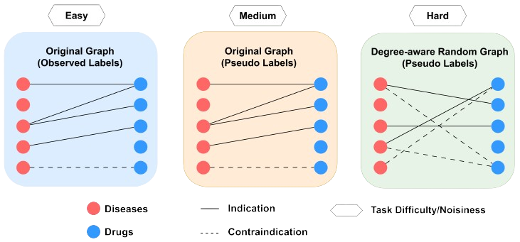
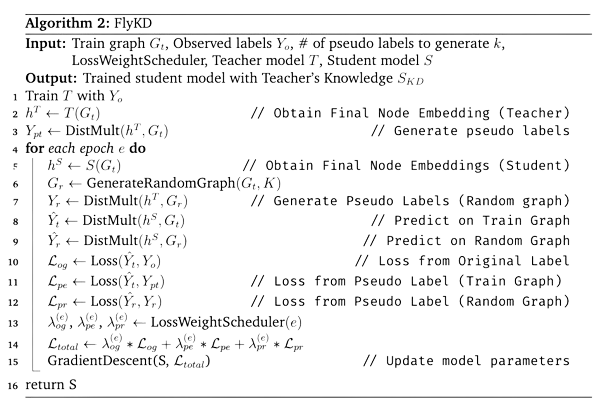
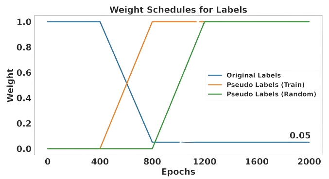

FlyKD first trains a teacher TxGNN, zero-shot Relational GCN (R-GCN) developed by (Chandak, Huang and Zitnik (2023)), to predict the existence of indication and contraindication relations between drugs and diseases. With pre-trained teacher TxGNN, we obtain the final node embeddings of the original graph then use the final node embeddings with a scoring function called DistMult to generate three types of labels: Original Label, Pseudo label on Training graph, and Pseudo label on Degree-aware Random Graph. These three types of labels are illustrated below and ordered by the level of noisiness.
The recipe for generating Degree-Aware Random Graph is depicted below:
In plain words, GenerateRandomGraph selects two nodes where the probability of a node being selected is proportionate to the degree of a node in the original graph (with respect to the relation). By doing so, we increase the quality of the pseudo labels on the random graph by utilizing the prior information that nodes that have seen more labels during training are more likely to have a higher embedding quality. Once two nodes are selected, a link is formed between them. This process of generating pseudo links is repeated k times.
The above generation of random graph per epoch conceptually enables the teacher model to generate unlimited number of pseudo labels that can be backpropgated by the student model.
As mentioned earlier, pseudo labels are inherently noisy and pseudo labels on random graphs are even more noisy. Thus, we incorporate a form of Curriculum Learning by utilizing a loss scheduler, which gradually shifts the emphasis from easy original label to medium pseudo label on train graph and ultimately hard pseudo label on the random graph. The loss scheduler is depicted below:
Here are the baseline models' performances where TxGNN 130 represents the more capable teacher model and TxGNN 80 represents the lighter student model.
| Model | Num. Params | Seed 45 | Seed 46 | Seed 47 | Seed 48 | Seed 49 | Mean ± std |
|---|---|---|---|---|---|---|---|
| Baseline 130 | (1.7M) | 80.33 | 73.66 | 76.29 | 84.19 | 79.91 | 78.87 ± 4.04 |
| Baseline 80 | (650k) | 78.64 | 71.97 | 74.44 | 82.74 | 77.87 | 77.13 ± 4.13 |
There is a high variance of performance due to zero-shot evaluation setting. Thus, we focus on the relative performance gains at each seed and average across seeds. This way, we can more accurately attribute changes in performance to the methods themselves, rather than to fluctuations in task difficulty associated with different seeds.
In our study, we delve into three distinct methods of Knowledge Distillation (KD) for Graph Neural Networks (GNN): Basic Knowledge Distillation (BKD) as introduced by Hinton, Vinyals, and Dean in 2015, Local Structure Preserving GCN (LSPGCN, also known as DistillGCN) developed by Yang et al. in 2020, and our innovative approach, FlyKD.
| Model | Time | Curriculum Learning | Mean±std |
|---|---|---|---|
| Basic KD | 1600 | No | -0.62±0.59 |
| LSP 1 layer (RBF) | 20000 | No | -1.09±0.23 |
| LSP 2 layers (RBF) | 40000 | No | -1.41±0.82 |
| FlyKD | 2000 | Yes | 1.16±0.36 |
Our experiments reveal that while BKD and LSPGCN result in negative KD effects, FlyKD stands out by achieving positive relative gains. We find out the reason for such gap in the following ablation study.
| Model | Configuration | Mean±std |
|---|---|---|
| Basic KD | Employ Curriculum Learning | 0.93±0.45 |
| FlyKD | Fix Random Graph | 1.14±0.39 |
| FlyKD | No Curriculum Learning | 0.19±0.42 |
| FlyKD | Take Out Pseudo Labels on Train Dataset | -0.68±0.63 |
| FlyKD | stepwise function for Curriculum Learning | -1.436±0.86 |
Our ablation study shows that noise in the teacher model's pseudo labels causes the performance gap between FlyKD and other KD methods. Adding Curriculum Learning to BKD improves its performance noticeably, giving a +1.55% boost over the standard approach.
Last Remark: We believe our experimental results suggest a new research direction of how to improve the optimization process of the student model rather than the common what pseudo labels to generate (What to distill).